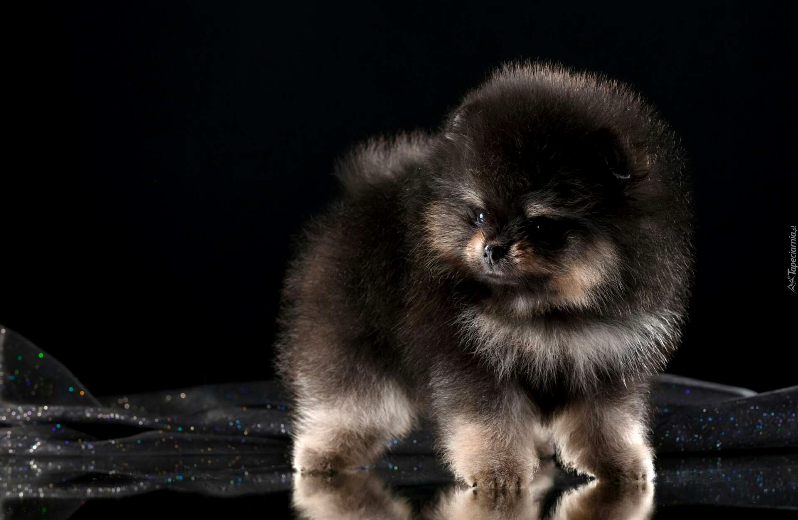
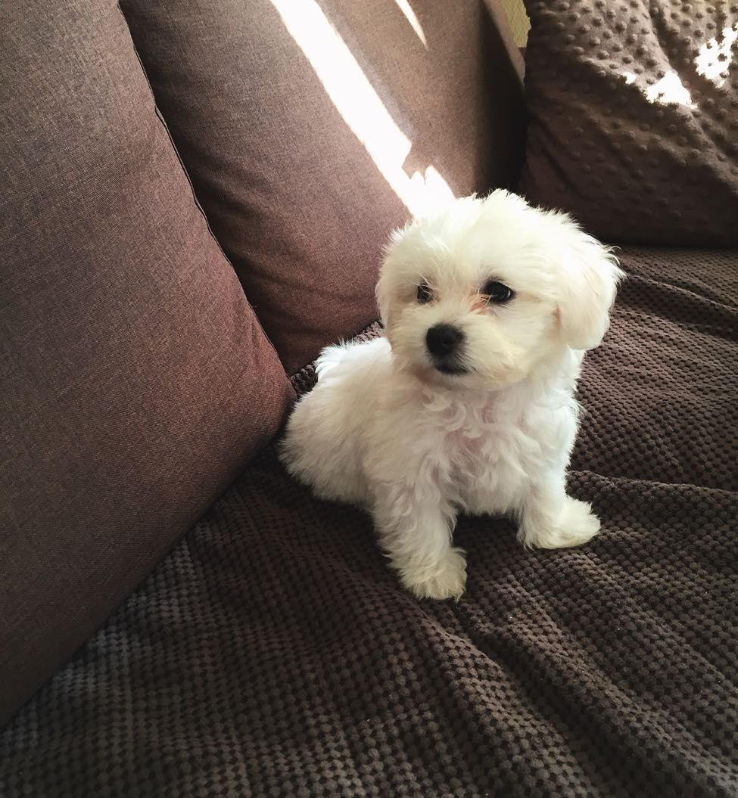
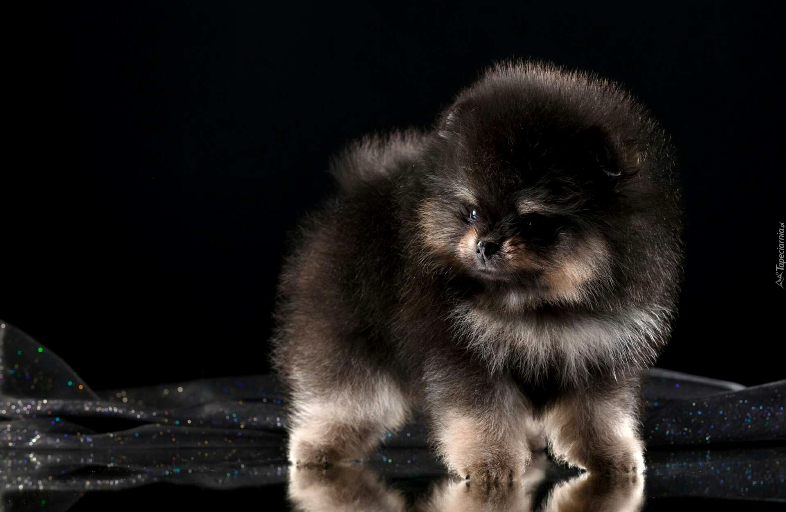
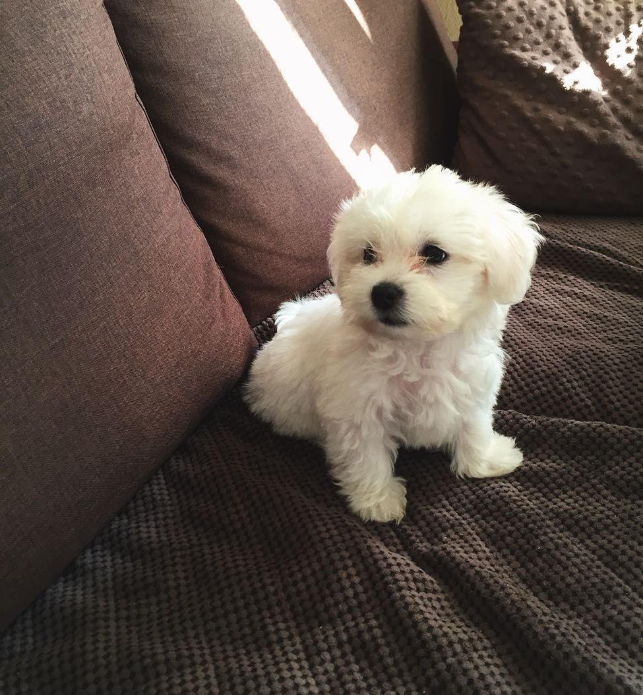

Strona główna


Na naszej stronie dowiecie sie jak wychowac i zrosumiec potrzeby psow .
Strona oferuje wam informacje na temat prawidlowego odrzywiania i zdrowia waszych podopiecznych :)


Na naszej stronie dowiecie sie jak wychowac i zrosumiec potrzeby psow .
Strona oferuje wam informacje na temat prawidlowego odrzywiania i zdrowia waszych podopiecznych :)